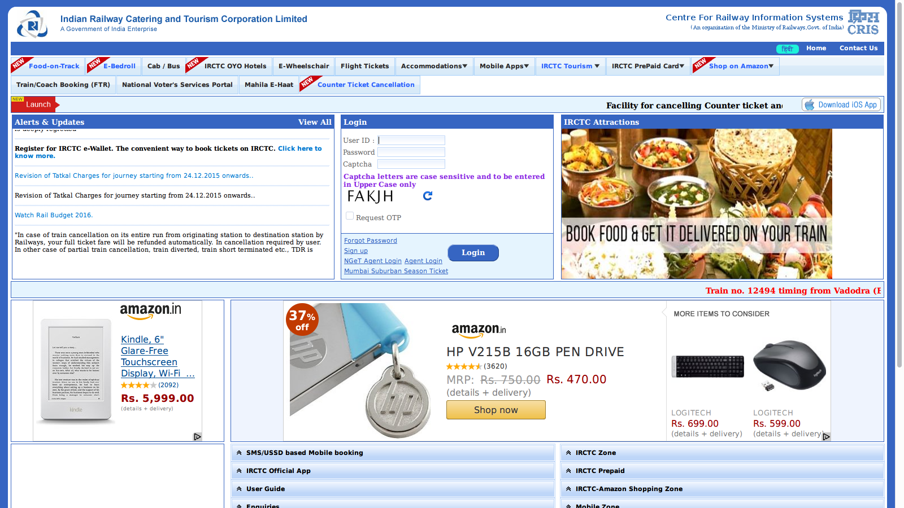

India is a thriving democratic nation with the tenth largest economy in the world. With 1.2 billion people, India also happen to be the Second most populated Nation in the world. India has a very good Computer-based management system implemented by the government itself.
While it is still a work in progress for many areas, there are areas where the systems had been deployed and working successfully for years. Most of these are advertised to be of good use to each and every Indian Citizen, but I am probably more of the opinion that these system are designed to not be used by Homo Sapiens(Human Beings). While the government spends billions every year in Integrating Computer Systems into the Government's infrastructure, I wonder why is it so difficult for them to employ a good Designer to make things simpler for the Citizen. In fact, the NIC(National Informatics Centre), the controller of all electronic systems used by the Government in India even has a website citing the guidelines for Government websites, which in fact most of these unusable websites follow - making them practically unusable.
In Kerala, most of the computer-based online Application and retrieval of Certificates have already been employed with a system called e-District, which turns out to be, the most unusable web application I have ever used. To be frank, every feature required in such a system has been implemented, but no one knows where these are available in the application itself. I don't mind the aesthetics of a government facility, but I do mind the usability - an alien word for the Software Companies who were outsourced with the job of building and maintaining these century-old Interfaces.
There are probably a hundred more examples of similiar unusable applications available from the Indian Government. Checking and Comparing with other Nation's websites - be it China, Russia or Brazil all having similiar Computer Infrastructure have much better usable Interfaces for their websites. Most of them have very good Interaction Patterns too, while India still uses the technologies for 90s.
Indian Government, in general has an ecosystem of very advanced computers along with probably UNIVACs from 1940s.It is not unusual when a Govt. Education website crashes an hour after School Examination results are published(Not blaming them completely though). I believe this is the time for a change.
IRCTC(Indian Railway, Catering and Tourism Corporation), the controller and maintainer of thousands of trains in India, has a website, which has an amazing interface that allows me to book train tickets in no time(Being Sarcastic). It would be better, if at least i'm able to book tickets easily and also manage them on the IRCTC website, which is a nightmare in the existing system.

The home page itself is a nightmare. Already making millions, does Indian Railway really need the money from Google AdSense? I don't really understand.
What I think should happen in the situation right now is a radical redesign of all the Government Systems - not on the backend but on the frontend to make it more usable, which in practice is not very difficult. But, if you are an Indian, you know how corrupted the politics is and how difficult it is to get something as simple as this accepted by the government. It will take at least a few years and another million rupees for this maybe month-long job of redefining the rules for the design of government websites.
All of these websites and Systems are developed to be useful for each and every citizen of India, which apparently is not the case happening right now. I think a radical approach should be applied into making these existing systems easier to use, than announcing another 100 projects in the next yearly budget - that would be a sensible decision.
The most basic things are the first to be changed to provide a better life for each and every Indian.